xDS REST and gRPC protocol
Envoy discovers its various dynamic resources via the filesystem or by
querying one or more management servers. Collectively, these discovery
services and their corresponding APIs are referred to as xDS.
Resources are requested via subscriptions, by specifying a filesystem
path to watch, initiating gRPC streams, or polling a REST-JSON URL. The
latter two methods involve sending requests with a DiscoveryRequest
proto payload. Resources are delivered in a
DiscoveryResponse
proto payload in all methods. We discuss each type of subscription
below.
Resource Types
Every configuration resource in the xDS API has a type associated with it. Resource types follow a versioning scheme. Resource types are versioned independent of the transports described below.
The following v3 xDS resource types are supported:
The concept of type URLs
appears below, and takes the form type.googleapis.com/<resource type> – e.g.,
type.googleapis.com/envoy.config.cluster.v3.Cluster for a Cluster resource. In various requests from
Envoy and responses by the management server, the resource type URL is stated.
Protoc-Gen-Validate Annotations
The protobuf messages for the individual xDS resource types have annotations using protoc-gen-validate (PGV), which indicate semantic constraints to be used to validate the contents of a resource when it is received by a client.
Clients are not required to use these PGV annotations to validate the resources (e.g., Envoy does this validation, but gRPC does not). Also, the PGV annotations are not intended to be an exhaustive list of validation checks to be performed by the client; clients may reject a resource for reasons unrelated to the PGV annotations.
In general, the PGV annotations are not intended to be used by control planes or xDS proxies directly. There may be some cases where a control plane may wish to do validation using the PGV annotations as a means of catching problems earlier in the config pipeline (e.g., rejecting invalid input when the resource is added to the control plane, before it is ever sent to any client). However, the PGV annotations evolve over time as the xDS API evolves, and it is not considered a breaking change in the API to make a PGV annotation less strict. Therefore, in the general case, a control plane cannot assume that all of its clients were compiled with the same version of the xDS proto files as the control plane was, which means that it cannot know that the client will actually use the same validations that the server does. This can lead to problems where the server rejects a resource that the client would have accepted.
Filesystem subscriptions
The simplest approach to delivering dynamic configuration is to place it
at a well known path specified in the ConfigSource.
Envoy will use inotify (kqueue on macOS) to monitor the file for
changes and parse the
DiscoveryResponse proto in the file on update.
Binary protobufs, JSON, YAML and proto text are supported formats for
the
DiscoveryResponse.
There is no mechanism available for filesystem subscriptions to ACK/NACK updates beyond stats counters and logs. The last valid configuration for an xDS API will continue to apply if an configuration update rejection occurs.
Streaming gRPC subscriptions
API flow
For typical HTTP routing scenarios, the core resource types for the client’s configuration are
Listener, RouteConfiguration, Cluster, and ClusterLoadAssignment. Each Listener resource
may point to a RouteConfiguration resource, which may point to one or more Cluster resources,
and each Cluster resource may point to a ClusterLoadAssignment resource.
Envoy fetches all Listener and Cluster resources at startup. It then fetches whatever
RouteConfiguration and ClusterLoadAssignment resources that are required by the Listener and
Cluster resources. In effect, every Listener or Cluster resource is a root to part of Envoy’s
configuration tree.
A non-proxy client such as gRPC might start by fetching only the specific Listener resources
that it is interested in. It then fetches the RouteConfiguration resources required by those
Listener resources, followed by whichever Cluster resources are required by those
RouteConfiguration resources, followed by the ClusterLoadAssignment resources required
by the Cluster resources. In effect, the original Listener resources are the roots to
the client’s configuration tree.
Variants of the xDS Transport Protocol
Four Variants
There are four variants of the xDS transport protocol used via streaming gRPC, which cover all combinations of two dimensions.
The first dimension is State of the World (SotW) vs. incremental. The SotW approach was the original mechanism used by xDS, in which the client must specify all resource names it is interested in with each request, and for LDS and CDS resources, the server must return all resources that the client has subscribed to in each request. This means that if the client is already subscribing to 99 resources and wants to add an additional one, it must send a request with all 100 resource names, rather than just the one new one. And for LDS and CDS resources, the server must then respond by sending all 100 resources, even if the 99 that were already subscribed to have not changed. This mechanism can be a scalability limitation, which is why the incremental protocol variant was introduced. The incremental approach allows both the client and server to indicate only deltas relative to their previous state – i.e., the client can say that it wants to add or remove its subscription to a particular resource name without resending those that have not changed, and the server can send updates only for those resources that have changed. The incremental protocol also provides a mechanism for lazy loading of resources. For details on the incremental protocol, see Incremental xDS below.
The second dimension is using a separate gRPC stream for each resource type vs. aggregating all resource types onto a single gRPC stream. The former approach was the original mechanism used by xDS, and it offers an eventual consistency model. The latter approach was added for environments in which explicit control of sequencing is required. For details, see Eventual consistency considerations below.
So, the four variants of the xDS transport protocol are:
State of the World (Basic xDS): SotW, separate gRPC stream for each resource type
Incremental xDS: incremental, separate gRPC stream for each resource type
Aggregated Discovery Service (ADS): SotW, aggregate stream for all resource types
Incremental ADS: incremental, aggregate stream for all resource types
RPC Services and Methods for Each Variant
For the non-aggregated protocol variants, there is a separate RPC service for each resource type. Each of these RPC services can provide a method for each of the SotW and Incremental protocol variants. Here are the RPC services and methods for each resource type:
Listener: Listener Discovery Service (LDS)
SotW: ListenerDiscoveryService.StreamListeners
Incremental: ListenerDiscoveryService.DeltaListeners
RouteConfiguration: Route Discovery Service (RDS)
SotW: RouteDiscoveryService.StreamRoutes
Incremental: RouteDiscoveryService.DeltaRoutes
ScopedRouteConfiguration: Scoped Route Discovery Service (SRDS)
SotW: ScopedRouteDiscoveryService.StreamScopedRoutes
Incremental: ScopedRouteDiscoveryService.DeltaScopedRoutes
VirtualHost: Virtual Host Discovery Service (VHDS)
SotW: N/A
Incremental: VirtualHostDiscoveryService.DeltaVirtualHosts
Cluster: Cluster Discovery Service (CDS)
SotW: ClusterDiscoveryService.StreamClusters
Incremental: ClusterDiscoveryService.DeltaClusters
ClusterLoadAssignment: Endpoint Discovery Service (EDS)
SotW: EndpointDiscoveryService.StreamEndpoints
Incremental: EndpointDiscoveryService.DeltaEndpoints
Secret: Secret Discovery Service (SDS)
SotW: SecretDiscoveryService.StreamSecrets
Incremental: SecretDiscoveryService.DeltaSecrets
Runtime: Runtime Discovery Service (RTDS)
SotW: RuntimeDiscoveryService.StreamRuntime
Incremental: RuntimeDiscoveryService.DeltaRuntime
In the aggregated protocol variants, all resource types are multiplexed on a single gRPC stream, where each resource type is treated as a separate logical stream within the aggregated stream. In effect, it simply combines all of the above separate APIs into a single stream by treating requests and responses for each resource type as a separate sub-stream on the single aggregated stream. The RPC service and methods for the aggregated protocol variants are:
SotW: AggregatedDiscoveryService.StreamAggregatedResources
Incremental: AggregatedDiscoveryService.DeltaAggregatedResources
For all of the SotW methods, the request type is DiscoveryRequest and the response type is DiscoveryResponse.
For all of the incremental methods, the request type is DeltaDiscoveryRequest and the response type is DeltaDiscoveryResponse.
Configuring Which Variant to Use
In the xDS API, the ConfigSource message indicates how to obtain resources of a particular type. If the ConfigSource contains a gRPC ApiConfigSource, it points to an upstream cluster for the management server; this will initiate an independent bidirectional gRPC stream for each xDS resource type, potentially to distinct management servers. If the ConfigSource contains a AggregatedConfigSource, it tells the client to use ADS.
Currently, the client is expected to be given some local configuration that tells it how to obtain the Listener and Cluster resources. Listener resources may include a ConfigSource that indicates how the RouteConfiguration resources are obtained, and Cluster resources may include a ConfigSource that indicates how the ClusterLoadAssignment resources are obtained.
Client Configuration
In Envoy, the bootstrap file contains two ConfigSource messages, one indicating how Listener resources are obtained and another indicating how Cluster resources are obtained. It also contains a separate ApiConfigSource message indicating how to contact the ADS server, which will be used whenever a ConfigSource message (either in the bootstrap file or in a Listener or Cluster resource obtained from a management server) contains an AggregatedConfigSource message.
A current limitation in Envoy is that any xDS Cluster resources should be specified first in the static_resources field of the Bootstrap configuration prior to any static Cluster resources that depend on the xDS cluster. Failure to do so will result in slower Envoy initialization (see the GitHub issue for details). As an example, if a cluster depends on an xDS Cluster for SDS to configure the secrets on a transport socket, the xDS Cluster should be specified first in the static_resources field, before the cluster with the transport socket secret is specified.
In a gRPC client that uses xDS, only ADS is supported, and the bootstrap file contains the name of the ADS server, which will be used for all resources. The ConfigSource messages in the Listener and Cluster resources must contain AggregatedConfigSource messages.
The xDS transport Protocol
Transport API version
In addition the resource type version described above, the xDS wire protocol has a transport version associated with it. This provides type versioning for messages such as DiscoveryRequest and DiscoveryResponse. It is also encoded in the gRPC method name, so a server can determine which version a client is speaking based on which method it calls.
Basic Protocol Overview
Each xDS stream begins with a DiscoveryRequest from the client, which specifies the list of resources to subscribe to, the type URL corresponding to the subscribed resources, the node identifier, and an optional resource type instance version indicating the most recent version of the resource type that the client has already seen (see ACK/NACK and resource type instance version for details).
The server will then send a DiscoveryResponse containing any resources that the client has subscribed to that have changed since the last resource type instance version that the client indicated it has seen. The server may send additional responses at any time when the subscribed resources change.
Whenever the client receives a new response, it will send another request indicating whether or not the individual resources in the response were valid in isolation (see ACK/NACK and resource type instance version for details).
All server responses will contain a nonce, and all subsequent requests from the client must set the response_nonce field to the most recent nonce received from the server on that stream. This allows servers to determine which response a given request is associated with, which avoids various race conditions in the SotW protocol variants. Note that the nonce is valid only in the context of an individual xDS stream; it does not survive stream restarts. In the aggregated protocol variant, the nonce is tracked separately for each resource type.
Only the first request on a stream is guaranteed to carry the node identifier. The subsequent discovery requests on the same stream may carry an empty node identifier. This holds true regardless of the acceptance of the discovery responses on the same stream. The node identifier should always be identical if present more than once on the stream. It is sufficient to only check the first message for the node identifier as a result.
ACK/NACK and resource type instance version
Every xDS resource type has a version string that indicates the version for that resource type. Whenever one resource of that type changes, the version is changed.
In a response sent by the xDS server, the version_info field indicates the current version for that resource type. The client then sends another request to the server with the version_info field indicating the most recent valid version seen by the client. This provides a way for the server to determine when it sends a version that the client considers invalid.
(In the incremental protocol variants, the resource type instance version is sent by the server in the system_version_info field. However, this information is not actually used by the client to communicate which resources are valid, because the incremental API variants have a separate mechanism for that.)
The resource type instance version is separate for each resource type. When using the aggregated protocol variants, each resource type has its own version even though all resource types are being sent on the same stream.
The resource type instance version is also separate for each xDS server (where an xDS server is identified by a unique ConfigSource). When obtaining resources of a given type from multiple xDS servers, each xDS server will have a different notion of version.
Note that the version for a resource type is not a property of an individual xDS stream but rather a property of the resources themselves. If the stream becomes broken and the client creates a new stream, the client’s initial request on the new stream should indicate the most recent version seen by the client on the previous stream. Servers may decide to optimize by not resending resources that the client had already seen on the previous stream, but only if they know that the client is not subscribing to a new resource that it was not previously subscribed to. For example, it is generally safe for servers to do this optimization for LDS and CDS when the only subscription is a wildcard subscription, and it is safe to do in environments where the clients will always subscribe to exactly the same set of resources.
An example EDS request might be:
version_info:
node: { id: envoy }
resource_names:
- foo
- bar
type_url: type.googleapis.com/envoy.config.endpoint.v3.ClusterLoadAssignment
response_nonce:
The management server may reply either immediately or when the requested resources are available with a DiscoveryResponse, e.g.:
version_info: X
resources:
- foo ClusterLoadAssignment proto encoding
- bar ClusterLoadAssignment proto encoding
type_url: type.googleapis.com/envoy.config.endpoint.v3.ClusterLoadAssignment
nonce: A
After processing the DiscoveryResponse, Envoy will send a new request on the stream, specifying the last version successfully applied and the nonce provided by the management server. The version provides Envoy and the management server a shared notion of the currently applied configuration, as well as a mechanism to ACK/NACK configuration updates.
ACK
If all resources in the update were valid, the
version_info will be X, as indicated
in the sequence diagram:
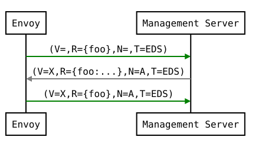
Note
ACKing simply means that the client considered each of the resources in the response to be valid when evaluated in isolation.
NACK
If Envoy had instead found some resources in configuration
update X to be invalid, it would reply with error_detail
populated and its previous version, which in this case was the empty
initial version. Note that a NACK does not necessarily mean that none of the resources were
accepted. The error_detail has more details around the
exact error message populated in the message field:
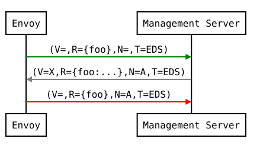
In the sequence diagrams, the following format is used to abbreviate messages:
DiscoveryRequest: (V=version_info,R=resource_names,N=response_nonce,T=type_url)DiscoveryResponse: (V=version_info,R=resources,N=nonce,T=type_url)
After a NACK, an API update may succeed at a new version Y:
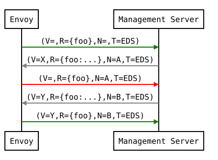
The preferred mechanism for a server to detect a NACK is to look for the presence of the error_detail field in the request sent by the client. Some older servers may instead detect a NACK by looking at both the version and the nonce in the request: if the version in the request is not equal to the one sent by the server with that nonce, then the client has rejected the most recent version. However, this approach does not work for APIs other than LDS and CDS for clients that may dynamically change the set of resources that they are subscribing to, unless the server has somehow arranged to increment the resource type instance version every time any one client subscribes to a new resource. Specifically, consider the following example:
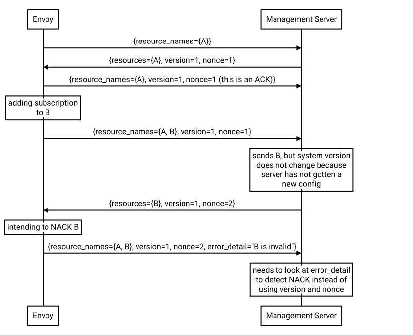
ACK and NACK semantics summary
The xDS client should
ACKorNACKevery DiscoveryResponse received from the management server. The response_nonce field tells the server which of its responses theACKorNACKis associated with.ACKsignifies that the individual resources were valid and that the client’s intent is toapply them; however, it does not mean that the configuration has been applied successfully. After the client sends
ACK, it can still fail to apply the resources. It contains the version_info from the DiscoveryResponse.
NACKsignifies that at least one of the resources in the response were considered invalid. ANACKis indicated by the presence of the error_detail field. The version_info indicates the most recent version that the client is using, although that may not be an older version in the case where the client has subscribed to a new resource from an existing version and that new resource is invalid (see example above).
When to send an update
The management server should only send updates to the Envoy client when
the resources in the DiscoveryResponse have changed. Envoy replies
to any DiscoveryResponse with a DiscoveryRequest containing the
ACK/NACK immediately after it has been either accepted or rejected. If
the management server provides the same set of resources rather than
waiting for a change to occur, it will cause needless work on both the client and the management
server, which could have a severe performance impact.
Within a stream, new DiscoveryRequests supersede any prior DiscoveryRequests having the same resource type. This means that the management server only needs to respond to the latest DiscoveryRequest on each stream for any given resource type.
How the client specifies what resources to return
xDS requests allow the client to specify a set of resource names as a hint to the server about which resources the client is interested in. In the SotW protocol variants, this is done via the resource_names specified in the DiscoveryRequest; in the incremental protocol variants, this is done via the resource_names_subscribe and resource_names_unsubscribe fields in the DeltaDiscoveryRequest.
Normally (see below for exceptions), requests must specify the set of resource names that the client is interested in. The management server must supply the requested resources if they exist. The client will silently ignore any supplied resources that were not explicitly requested. When the client sends a new request that changes the set of resources being requested, the server must resend any newly requested resources, even if it previously sent those resources without having been asked for them and the resources have not changed since that time. If the list of resource names becomes empty, that means that the client is no longer interested in any resources of the specified type.
For Listener and Cluster resource
types, there is also a “wildcard” subscription, which is triggered when subscribing to the special
name *. In this case, the server should use site-specific business logic to determine the full
set of resources that the client is interested in, typically based on the client’s
node identification.
For historical reasons, if the client sends a request for a given resource type but has never
explicitly subscribed to any resource names (i.e., in SotW, all requests on the stream for that
resource type have had an empty resource_names
field, or in incremental, having never sent a request on the stream for that resource type with a
non-empty resource_names_subscribe
field), the server should treat that identically to how it would treat the client having
explicitly subscribed to *. However, once the client does explicitly subscribe to a resource
name (whether it be * or any other name), then this legacy semantic is no longer available; at
that point, clearing the list of subscribed resources is interpretted as an unsubscription (see
Unsubscribing From Resources) rather than as a subscription
to *.
For example, in SotW:
Client sends a request with resource_names unset. Server interprets this as a subscription to
*.Client sends a request with resource_names set to
*andA. Server interprets this as continuing the existing subscription to*and adding a new subscription toA.Client sends a request with resource_names set to
A. Server interprets this as unsubscribing to*and continuing the existing subscription toA.Client sends a request with resource_names unset. Server interprets this as unsubscribing to
A(i.e., the client has now unsubscribed to all resources). Although this request is identical to the first one, it is not interpreted as a wildcard subscription, because there has previously been a request on this stream for this resource type that set the resource_names field.
And in incremental:
Client sends a request with resource_names_subscribe unset. Server interprets this as a subscription to
*.Client sends a request with resource_names_subscribe set to
A. Server interprets this as continuing the existing subscription to*and adding a new subscription toA.Client sends a request with resource_names_unsubscribe set to
*. Server interprets this as unsubscribing to*and continuing the existing subscription toA.Client sends a request with resource_names_unsubscribe set to
A. Server interprets this as unsubscribing toA(i.e., the client has now unsubscribed to all resources). Although the set of subscribed resources is now empty, just as it was after the initial request, it is not interpreted as a wildcard subscription, because there has previously been a request on this stream for this resource type that set the resource_names_subscribe field.
Client Behavior
Envoy will always use wildcard subscriptions for Listener and Cluster resources. However, other xDS clients (such as gRPC clients that use xDS) may explicitly subscribe to specific resource names for these resource types, for example if they only have a singleton listener and already know its name from some out-of-band configuration.
Grouping Resources into Responses
In the incremental protocol variants, the server sends each resource in its own response. This means that if the server has previously sent 100 resources and only one of them has changed, it may send a response containing only the changed resource; it does not need to resend the 99 resources that have not changed, and the client must not delete the unchanged resources.
In the SotW protocol variants, all resource types except for Listener and Cluster are grouped into responses in the same way as in the incremental protocol variants. However, Listener and Cluster resource types are handled differently: the server must include the complete state of the world, meaning that all resources of the relevant type that are needed by the client must be included, even if they did not change since the last response. This means that if the server has previously sent 100 resources and only one of them has changed, it must resend all 100 of them, even the 99 that were not modified.
Note that all of the protocol variants operate on units of whole named resources. There is no mechanism for providing incremental updates of repeated fields within a named resource. Most notably, there is currently no mechanism for incrementally updating individual endpoints within an EDS response.
Duplicate Resource Names
It is an error for a server to send a single response that contains the same resource name twice. Clients should NACK responses that contain multiple instances of the same resource name.
Deleting Resources
In the incremental protocol variants, the server signals the client that a resource should be deleted via the removed_resources field of the response. This tells the client to remove the resource from its local cache.
In the SotW protocol variants, the criteria for deleting resources is more complex. For Listener and Cluster resource types, if a previously seen resource is not present in a new response, that indicates that the resource has been removed, and the client must delete it; a response containing no resources means to delete all resources of that type. However, for other resource types, the API provides no mechanism for the server to tell the client that resources have been deleted; instead, deletions are indicated implicitly by parent resources being changed to no longer refer to a child resource. For example, when the client receives an LDS update removing a Listener that was previously pointing to RouteConfiguration A, if no other Listener is pointing to RouteConfiguration A, then the client may delete A. For those resource types, an empty DiscoveryResponse is effectively a no-op from the client’s perspective.
Knowing When a Requested Resource Does Not Exist
The SotW protocol variants do not provide any explicit mechanism to determine when a requested resource does not exist.
Responses for Listener and Cluster
resource types must include all resources requested by the client. However, it may not be possible
for the client to know that a resource does not exist based solely on its absence in a response,
because the delivery of the updates is eventually consistent: if the client initially sends a
request for resource A, then sends a request for resources A and B, and then sees a response
containing only resource A, the client cannot conclude that resource B does not exist, because
the response may have been sent on the basis of the first request, before the server saw the
second request.
For other resource types, because each resource can be sent in its own response, there is no way to know from the next response whether the newly requested resource exists, because the next response could be an unrelated update for another resource that had already been subscribed to previously.
As a result, clients are expected to use a timeout (recommended duration is 15 seconds) after sending a request for a new resource, after which they will consider the requested resource to not exist if they have not received the resource. In Envoy, this is done for RouteConfiguration and ClusterLoadAssignment resources during resource warming.
Note that even if a requested resource does not exist at the moment when the client requests it, that resource could be created at any time. Management servers must remember the set of resources being requested by the client, and if one of those resources springs into existence later, the server must send an update to the client informing it of the new resource. Clients that initially see a resource that does not exist must be prepared for the resource to be created at any time.
Unsubscribing From Resources
In the incremental protocol variants, resources can be unsubscribed to via the resource_names_unsubscribe field.
In the SotW protocol variants, each request must contain the full list of resource names being
subscribed to in the resource_names field,
so unsubscribing to a set of resources is done by sending a new request containing all resource
names that are still being subscribed to but not containing the resource names being unsubscribed
to. For example, if the client had previously been subscribed to resources A and B but wishes to
unsubscribe from B, it must send a new request containing only resource A.
Note that for Listener and Cluster resource types where the client is using a “wildcard” subscription (see How the client specifies what resources to return for details), the set of resources being subscribed to is determined by the server instead of the client, so the client cannot unsubscribe from those resources individually; it can only unsubscribe from the wildcard as a whole.
Requesting Multiple Resources on a Single Stream
For EDS/RDS, Envoy may either generate a distinct stream for each
resource of a given type (e.g. if each ConfigSource has its own
distinct upstream cluster for a management server), or may combine
together multiple resource requests for a given resource type when they
are destined for the same management server. While this is left to
implementation specifics, management servers should be capable of
handling one or more resource_names for a given resource type in
each request. Both sequence diagrams below are valid for fetching two
EDS resources {foo, bar}:
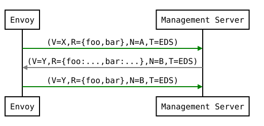
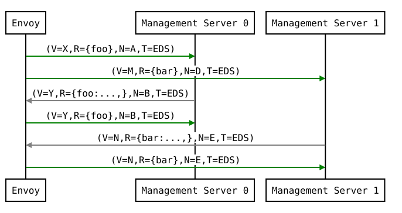
Resource updates
As discussed above, Envoy may update the list of resource_names it
presents to the management server in each DiscoveryRequest that
ACK/NACKs a specific DiscoveryResponse. In addition, Envoy may later
issue additional DiscoveryRequests at a given version_info to
update the management server with new resource hints. For example, if
Envoy is at EDS version X and knows only about cluster foo, but
then receives a CDS update and learns about bar in addition, it may
issue an additional DiscoveryRequest for X with {foo,bar} as
resource_names.
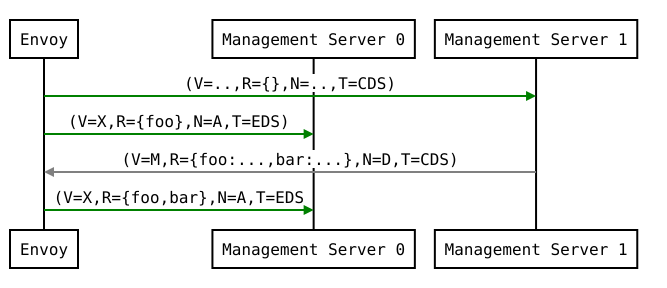
There is a race condition that may arise here; if after a resource hint
update is issued by Envoy at X, but before the management server
processes the update it replies with a new version Y, the resource
hint update may be interpreted as a rejection of Y by presenting an
X version_info. To avoid this, the management server provides a
nonce that Envoy uses to indicate the specific DiscoveryResponse
each DiscoveryRequest corresponds to:
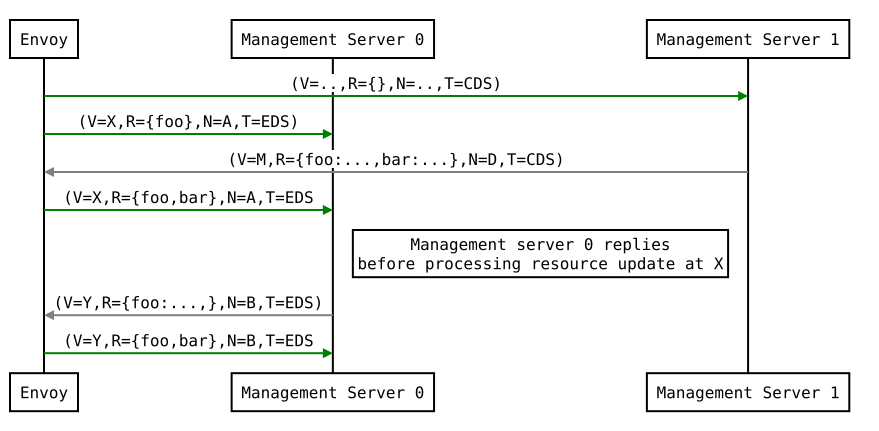
The management server should not send a DiscoveryResponse for any DiscoveryRequest that has a stale nonce. A nonce becomes stale following a newer nonce being presented to Envoy in a DiscoveryResponse. A management server does not need to send an update until it determines a new version is available. Earlier requests at a version then also become stale. It may process multiple DiscoveryRequests at a version until a new version is ready.
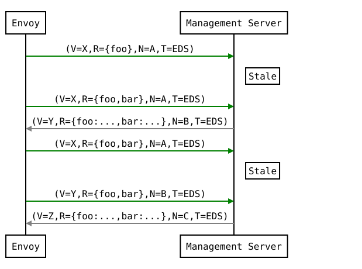
An implication of the above resource update sequencing is that Envoy does not expect a DiscoveryResponse for every DiscoveryRequests it issues.
Resource warming
Clusters and
Listeners
go through warming before they can serve requests. This process
happens both during Envoy initialization
and when the Cluster or Listener is updated. Warming of
Cluster is completed only when a ClusterLoadAssignment response
is supplied by management server. Similarly, warming of Listener is
completed only when a RouteConfiguration is supplied by management
server if the listener refers to an RDS configuration. Management server
is expected to provide the EDS/RDS updates during warming. If management
server does not provide EDS/RDS responses, Envoy will not initialize
itself during the initialization phase and the updates sent via CDS/LDS
will not take effect until EDS/RDS responses are supplied.
Note
Envoy specific implementation notes:
Warming of
Clusteris completed only when a newClusterLoadAssignmentresponse is supplied by management server even if there is no change in endpoints. Envoy will use a cachedClusterLoadAssignmentfor a cluster, if exists, after the resource warming times out.Warming of
Listeneris completed even if management server does not send a response forRouteConfigurationreferenced byListener. Envoy will use the previously sentRouteConfigurationto finishListenerwarming. Management Server has to send theRouteConfigurationresponse only if it has changed or it was never sent in the past.
Eventual consistency considerations
Since Envoy’s xDS APIs are eventually consistent, traffic may drop
briefly during updates. For example, if only cluster X is known via
CDS/EDS, a RouteConfiguration references cluster X and is then
adjusted to cluster Y just before the CDS/EDS update providing
Y, traffic will be blackholed until Y is known about by the
Envoy instance.
For some applications, a temporary drop of traffic is acceptable,
retries at the client or by other Envoy sidecars will hide this drop.
For other scenarios where drop can’t be tolerated, traffic drop could
have been avoided by providing a CDS/EDS update with both X and
Y, then the RDS update repointing from X to Y and then a
CDS/EDS update dropping X.
In general, to avoid traffic drop, sequencing of updates should follow a make before break model, wherein:
CDS updates (if any) must always be pushed first.
EDS updates (if any) must arrive after CDS updates for the respective clusters.
LDS updates must arrive after corresponding CDS/EDS updates.
RDS updates related to the newly added listeners must arrive after CDS/EDS/LDS updates.
VHDS updates (if any) related to the newly added RouteConfigurations must arrive after RDS updates.
Stale CDS clusters and related EDS endpoints (ones no longer being referenced) can then be removed.
xDS updates can be pushed independently if no new clusters/routes/listeners are added or if it’s acceptable to temporarily drop traffic during updates. Note that in case of LDS updates, the listeners will be warmed before they receive traffic, i.e. the dependent routes are fetched through RDS if configured. Clusters are warmed when adding/removing/updating clusters. On the other hand, routes are not warmed, i.e., the management plane must ensure that clusters referenced by a route are in place, before pushing the updates for a route.
TTL
In the event that the management server becomes unreachable, the last known configuration received by Envoy will persist until the connection is reestablished. For some services, this may not be desirable. For example, in the case of a fault injection service, a management server crash at the wrong time may leave Envoy in an undesirable state. The TTL setting allows Envoy to remove a set of resources after a specified period of time if contact with the management server is lost. This can be used, for example, to terminate a fault injection test when the management server can no longer be reached.
For clients that support the xds.config.supports-resource-ttl client feature, A TTL field may be specified on each Resource. Each resource will have its own TTL expiry time, at which point the resource will be expired. Each xDS type may have different ways of handling such an expiry.
To update the TTL associated with a Resource, the management server resends the resource with a new TTL. To remove the TTL, the management server resends the resource with the TTL field unset.
To allow for lightweight TTL updates (“heartbeats”), a response can be sent that provides a Resource with the resource unset and version matching the most recently sent version can be used to update the TTL. These resources will not be treated as resource updates, but only as TTL updates.
SotW TTL
In order to use TTL with SotW xDS, the relevant resources must be wrapped in a Resource. This allows setting the same TTL field that is used for Delta xDS with SotW, without changing the SotW API. Heartbeats are supported for SotW as well: any resource within the response that look like a heartbeat resource will only be used to update the TTL.
This feature is gated by the xds.config.supports-resource-in-sotw client feature.
Aggregated Discovery Service
It’s challenging to provide the above guarantees on sequencing to avoid traffic drop when management servers are distributed. ADS allow a single management server, via a single gRPC stream, to deliver all API updates. This provides the ability to carefully sequence updates to avoid traffic drop. With ADS, a single stream is used with multiple independent DiscoveryRequest/DiscoveryResponse sequences multiplexed via the type URL. For any given type URL, the above sequencing of DiscoveryRequest and DiscoveryResponse messages applies. An example update sequence might look like:
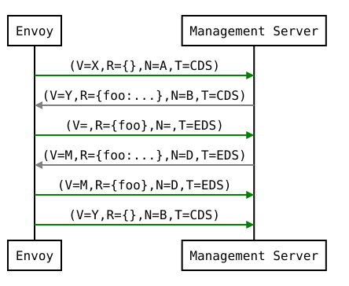
A single ADS stream is available per Envoy instance.
An example minimal bootstrap.yaml fragment for ADS configuration is:
node:
# set <cluster identifier>
cluster: envoy_cluster
# set <node identifier>
id: envoy_node
dynamic_resources:
ads_config:
api_type: GRPC
grpc_services:
- envoy_grpc:
cluster_name: ads_cluster
cds_config:
ads: {}
lds_config:
ads: {}
static_resources:
clusters:
- name: ads_cluster
type: STRICT_DNS
load_assignment:
cluster_name: ads_cluster
endpoints:
- lb_endpoints:
- endpoint:
address:
socket_address:
# set <ADS management server address>
address: my-control-plane
# set <ADS management server port>
port_value: 777
# It is recommended to configure either HTTP/2 or TCP keepalives in order to detect
# connection issues, and allow Envoy to reconnect. TCP keepalive is less expensive, but
# may be inadequate if there is a TCP proxy between Envoy and the management server.
# HTTP/2 keepalive is slightly more expensive, but may detect issues through more types
# of intermediate proxies.
typed_extension_protocol_options:
envoy.extensions.upstreams.http.v3.HttpProtocolOptions:
"@type": type.googleapis.com/envoy.extensions.upstreams.http.v3.HttpProtocolOptions
explicit_http_config:
http2_protocol_options:
connection_keepalive:
interval: 30s
timeout: 5s
upstream_connection_options:
tcp_keepalive: {}
Incremental xDS
Incremental xDS is a separate xDS endpoint that:
Allows the protocol to communicate on the wire in terms of resource/resource name deltas (“Delta xDS”). This supports the goal of scalability of xDS resources. Rather than deliver all 100k clusters when a single cluster is modified, the management server only needs to deliver the single cluster that changed.
Allows the Envoy to on-demand / lazily request additional resources. For example, requesting a cluster only when a request for that cluster arrives.
An Incremental xDS session is always in the context of a gRPC bidirectional stream. This allows the xDS server to keep track of the state of xDS clients connected to it. There is no REST version of Incremental xDS yet.
In the delta xDS wire protocol, the nonce field is required and used to pair a DeltaDiscoveryResponse to a DeltaDiscoveryRequest ACK or NACK. Optionally, a response message level system_version_info is present for debugging purposes only.
DeltaDiscoveryRequest can be sent in the following situations:
Initial message in a xDS bidirectional gRPC stream.
As an ACK or NACK response to a previous DeltaDiscoveryResponse. In this case the response_nonce is set to the nonce value in the Response. ACK or NACK is determined by the absence or presence of error_detail.
Spontaneous DeltaDiscoveryRequests from the client. This can be done to dynamically add or remove elements from the tracked resource_names set. In this case response_nonce must be omitted.
Note that while a response_nonce may be set on the request, the server must honor changes to the subscription state even if the nonce is stale. The nonce may be used to correlate an ack/nack with a server response, but should not be used to reject stale requests.
In this first example the client connects and receives a first update that it ACKs. The second update fails and the client NACKs the update. Later the xDS client spontaneously requests the “wc” resource.
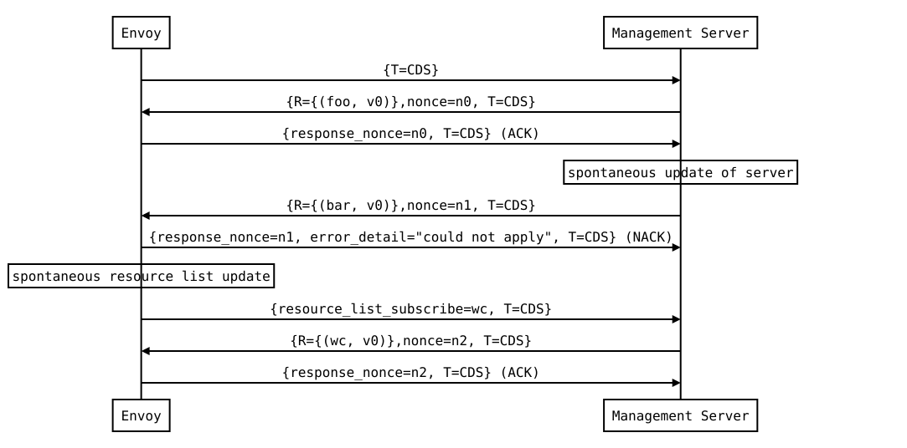
On reconnect the Incremental xDS client may tell the server of its known resources to avoid resending them over the network by sending them in initial_resource_versions. Because no state is assumed to be preserved from the previous stream, the reconnecting client must provide the server with all resource names it is interested in.
Note that for “wildcard” subscriptions (see How the client specifies what
resources to return for details), the
request must either specify * in the resource_names_subscribe
field or (legacy behavior) the request must have no resources in both
resource_names_subscribe and
resource_names_unsubscribe.
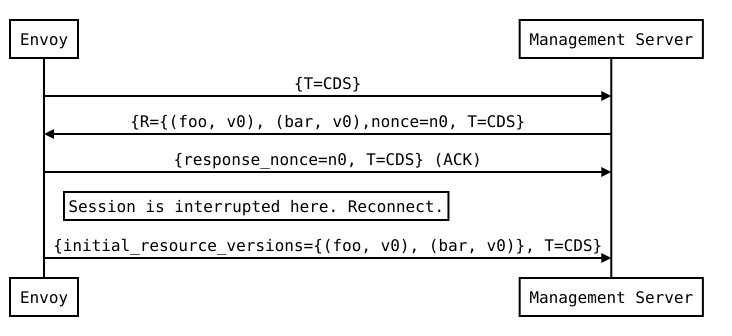
Resource names
Resources are identified by a resource name or an alias. Aliases of a resource, if present, can be identified by the alias field in the resource of a DeltaDiscoveryResponse. The resource name will be returned in the name field in the resource of a DeltaDiscoveryResponse.
Subscribing to Resources
The client can send either an alias or the name of a resource in the resource_names_subscribe field of a DeltaDiscoveryRequest in order to subscribe to a resource. Both the names and aliases of resources should be checked in order to determine whether the entity in question has been subscribed to.
A resource_names_subscribe field may contain resource names that the server believes the client is already subscribed to, and furthermore has the most recent versions of. However, the server must still provide those resources in the response; due to implementation details hidden from the server, the client may have “forgotten” those resources despite apparently remaining subscribed.
Unsubscribing from Resources
When a client loses interest in some resources, it will indicate that with the resource_names_unsubscribe field of a DeltaDiscoveryRequest. As with resource_names_subscribe, these may be resource names or aliases.
A resource_names_unsubscribe field may contain superfluous resource names, which the server thought the client was already not subscribed to. The server must cleanly process such a request; it can simply ignore these phantom unsubscriptions.
In most cases (see below for exception), a server does not need to send any response if a request does nothing except unsubscribe from a resource; in particular, servers are not generally required to send a response with the unsubscribed resource name in the removed_resources field.
However, there is one exception to the above: When a client has a wildcard subscription (*) and
a subscription to another specific resource name, it is possible that the specific resource name is
also included in the wildcard subscription, so if the client unsubscribes from that specific
resource name, it does not know whether or not to continue to cache the resource. To address this,
the server must send a response that includes the specific resource in either the
removed_resources
field (if it is not included in the wildcard) or in the
resources
field (if it is included in the wildcard).
Knowing When a Requested Resource Does Not Exist
When a resource subscribed to by a client does not exist, the server will send a DeltaDiscoveryResponse message that contains that resource’s name in the removed_resources field. This allows the client to quickly determine when a resource does not exist without waiting for a timeout, as would be done in the SotW protocol variants. However, clients are still encouraged to use a timeout to protect against the case where the management server fails to send a response in a timely manner.
REST-JSON polling subscriptions
Synchronous (long) polling via REST endpoints is also available for the xDS singleton APIs. The above sequencing of messages is similar, except no persistent stream is maintained to the management server. It is expected that there is only a single outstanding request at any point in time, and as a result the response nonce is optional in REST-JSON. The JSON canonical transform of proto3 is used to encode DiscoveryRequest and DiscoveryResponse messages. ADS is not available for REST-JSON polling.
When the poll period is set to a small value, with the intention of long polling, then there is also a requirement to avoid sending a DiscoveryResponse unless a change to the underlying resources has occurred via a resource update.